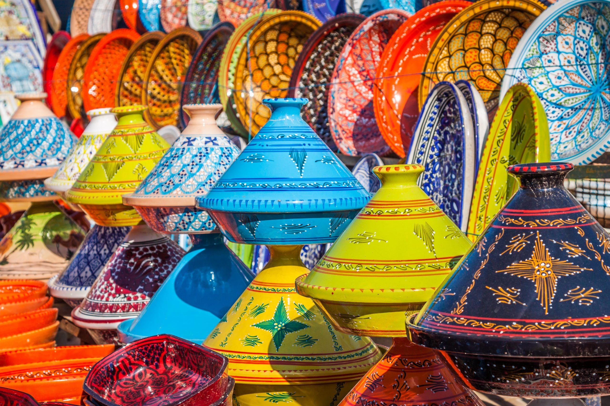
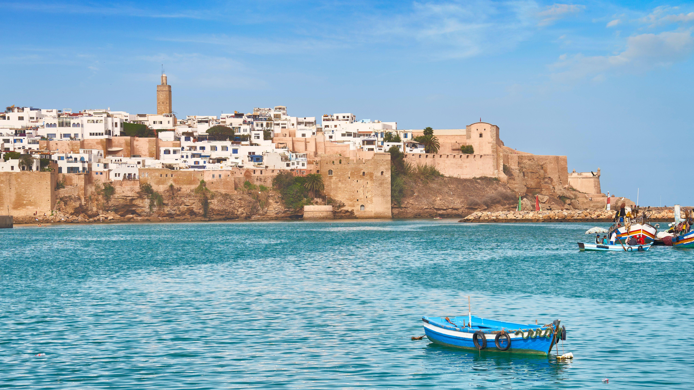
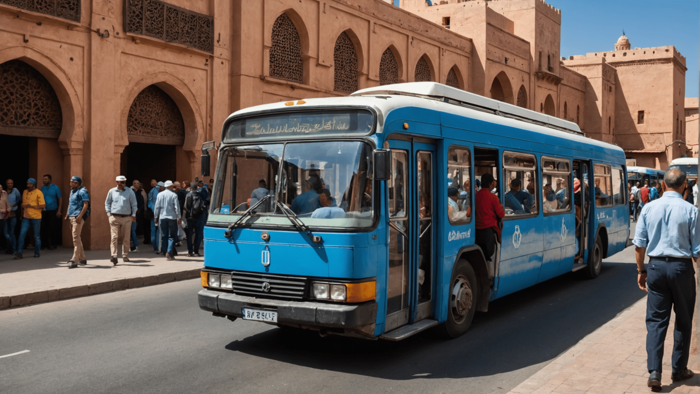
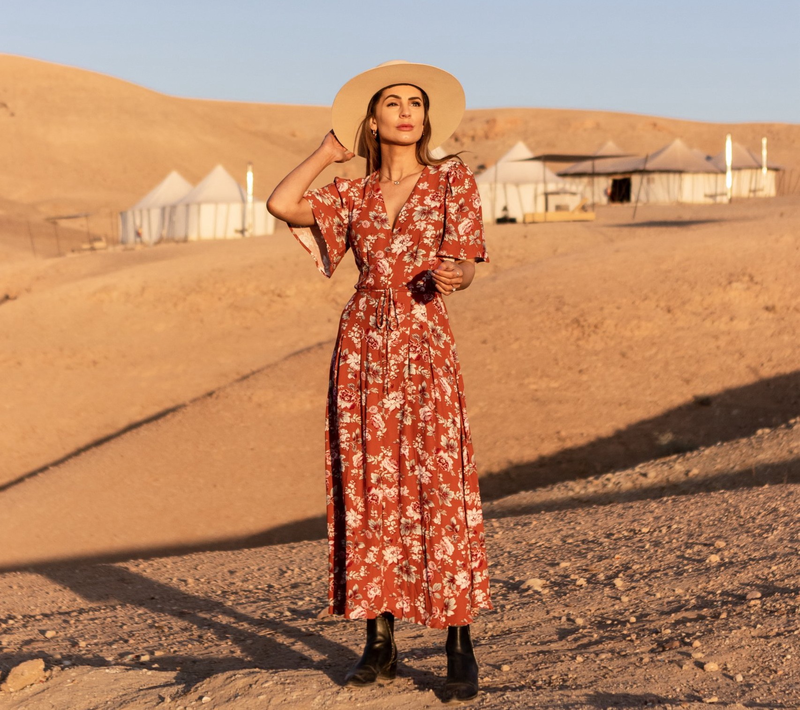

History
Culture
Morocco is a country with a rich culture and civilisation. Through Moroccan history, it has hosted many people. Culturally speaking, Morocco has combined its Arabic, Berber and Jewish cultural heritage with external influences such as the French and the Spanish and, during the last decades, the Anglo-American lifestyles. Since independence, painting and sculpture, music, amateur theatre and filmmaking have developed. The Moroccan National Theatre (founded 1956) offers regular productions of Moroccan and French dramatic works. Art and music festivals take place throughout the country during the summer months, among them the World Sacred Music Festival at Fès. 
Destinations
Marrakech – The "Red City"
Jemaa el-Fnaa (vibrant square with storytellers & food stalls).
Majorelle Garden (Yves Saint Laurent’s botanical paradise).

Fez – Medieval intellectual capital
Al Quaraouiyine University (oldest in the world).
Tanneries (ancient leather-dyeing pits).

Rabat (Capital)
Hassan Tower (unfinished mosque).
Kasbah of the Udayas (blue-and-white seaside fortress).
Meknes – Less touristy, with grand gates & ruins.

Travel Tips
Transportation
Trains (ONCF): Comfortable & efficient (Casablanca to Marrakech).
Grand Taxis (Shared): For intercity travel.
Buses (CTM & Supratours): Reliable for long distances.
Domestic Flights: Connect major cities (Royal Air Maroc).

Other Tips
Dress Modestly: Cover shoulders/knees, especially in rural areas.
Bargaining Expected: In souks, start at 50% of the asking price.
Avoid Tap Water: Drink bottled water.
Tipping: Small tips (10% in restaurants, a few dirhams for guides).

Location
Other Recommendations